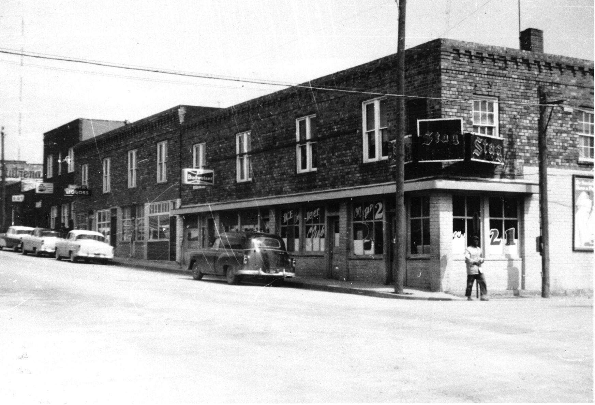
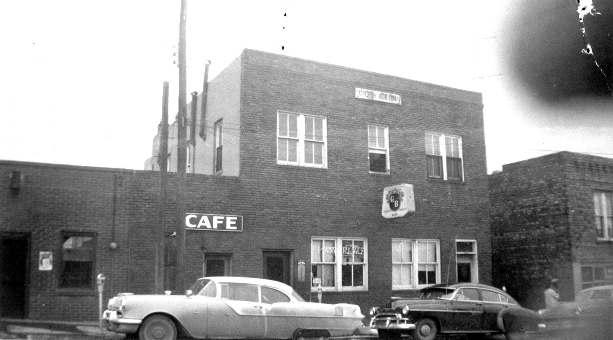
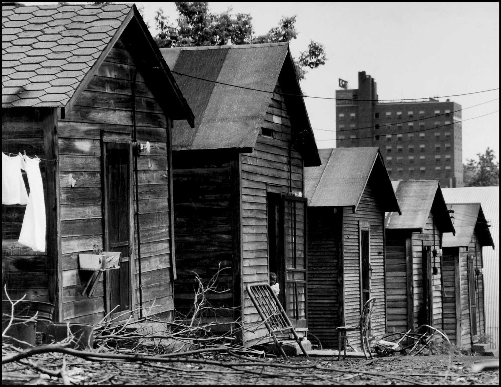

During the mid-20th century, a federal program called urban renewal was being enacted across the country by allocating funds to cities that needed to be rebuilt. When this urban renewal program came to Columbia, it wiped out the entire north side of downtown Columbia which was the thriving Sharp End District. This district was known as a city inside a city for the black community. It was a thriving residential and commercial district that featured restaurants, homes, apartments, and various other shops all owned and operated by black residents.
Caption: Row of buildings on the South side of Walnut Street between 5th and 6th Streets. This area is now a parking garage. Credit: The State Historial Society of Missouri
Sharp End was well known for occupying fifth and sixth street on Walnut. What started as just a few black owned businesses, later grew to house up to 26 businesses on average every year. During the time of the Sharp End District, separation of races in Columbia was at its height and therefore black residents made Sharp End what it was because they had nowhere else to go. This district became a safe haven city within the city because it was a place where they didn’t have to face the discrimination that was waiting for them on the southside of town.
Caption: Buildings in the once Sharp End District in downtown Columbia, MO on fifth and sixth street. Credit: The State Historial Society of Missouri
When the city was assessed for the urban renewal program funding, it was founded that the Sharp End district was run down and there was an unequal access to basic city services in the district. Because of this, the city used the programs funding to completely uproot the district and displace homeowners by buying their homes and forcing them out. Many homeowners were being forced to sell their homes to the city for an unreasonable price, less than what the homes were worth. Many businesses were torn down for new buildings to be built, including the parking garage on 5th and Walnut. Throughout this website, you will get to explore the history of the Sharp End District and what this area has turned into today and what the future may be for the area where this district use to reside and if Urban Renewal programs are still being enacted in the country and if other black communities are also being affected.
Caption: A row of homes in the once Sharp End District. These homes were taken from the residents and torn down during urban renewal Credit: The States Historical Society of Missouri